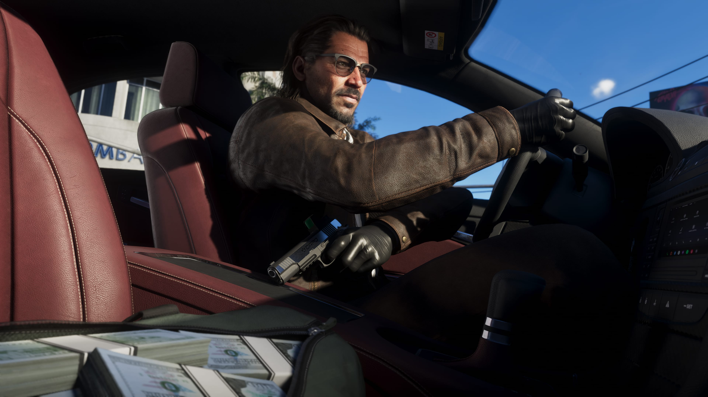

MAPA Filtrado
Arion Kurtaj, May 10, 2025
Mayor filtración hasta la fecha! El reciente likeo del mapa de Grand Theft Auto VI ha desatado una oleada de emoción y especulación entre los fanáticos de la saga. Aunque Rockstar Games aún no ha confirmado oficialmente los detalles. El mapa parece estar inspirado en una mezcla de ciudades icónicas de América, con un diseño que recuerda tanto a la vibrante Miami (con su arquitectura Art Deco y sus playas) como a otras metrópolis ficticias de la serie. En los likeos, se pueden ver grandes extensiones de tierra, desde áreas urbanas densas hasta zonas rurales y costeras, lo que promete una variedad de escenarios perfectos para todo tipo de actividades delictivas y aventuras.
El mapa también parece ofrecer un nivel de detalle sin precedentes, con calles repletas de vehículos, peatonales con personajes que parecen tener vida propia, y paisajes que van desde las playas soleadas hasta complejas zonas industriales.
TODOS LOS PERSONAJES
Filtración de los personajes, April 23, 2025
Nuevas Filtraciones! En GTA VI, Rockstar ha confirmado que la historia se desarrollará alrededor de dos protagonistas jugables: Jason y Lucia.
Jason es un hombre latino con un enfoque pragmático y centrado en el dinero, pero también tiene un lado emocional que lo conecta con su pasado. A pesar de ser calculador, tiene un fuerte sentido del honor, lo que lo pondrá en situaciones difíciles cuando los negocios y la lealtad se crucen. Por otro lado, Lucia es una mujer astuta, inteligente e independiente, que proviene de una familia con antecedentes criminales. Se siente cómoda en el mundo del crimen organizado y es una persona que no confía fácilmente en los demás. Su carácter fuerte y determinación hacen de ella una protagonista imponente y esencial para la narrativa. Los jugadores podrán alternar entre Jason y Lucia a lo largo del juego, explorando dos perspectivas diferentes del mundo criminal.
En cuanto a los antagonistas, el juego no se enfoca en un solo villano, sino que presenta varias facciones criminales que los protagonistas deben enfrentar. Entre los más destacados se encuentran el Cártel de Los Santos, una poderosa organización que controla gran parte del tráfico de drogas en Vice City, y el Gobernador de Vice City, un personaje corrupto y peligroso que juega en el mundo político y criminal. Este último será una de las amenazas más grandes para Jason y Lucia, involucrándose en un juego de poder y corrupción a gran escala.
HABRÁN BANDAS
Nueva info sobre posbles bandas criminales, April 7, 2025
Aparecen las bandas! Recientemente, se ha filtrado información que sugiere que GTA VI presentará un sistema de gangs mucho más dinámico y profundo que en entregas anteriores.
Según las filtraciones, GTA VI no solo contará con las típicas facciones criminales de las que hemos conocido en la saga, sino que la ciudad estará infestada de gangs locales que competirán entre sí por el control del territorio. Estos grupos estarán distribuidos por toda la ciudad, desde los barrios bajos hasta las zonas más exclusivas, lo que permitirá a los jugadores sumergirse en una lucha constante por el dominio de Vice City.
.jpg)

Filtraciones GTA VI
Aquí encontrarás todo lo relacionado con el próximo gran lanzamiento de la saga que ha marcado historia en el mundo de los videojuegos. En esta página, podrás estar al tanto de las últimas novedades, filtraciones, rumores y actualizaciones oficiales sobre GTA VI, el juego que promete llevar la experiencia de open-world a un nivel completamente nuevo.
Anuncio

Últimas Imágenes



Síguenos
Suscríbete
Inserta el e-mail para ser notificado cada vez que haya un nuevo post.